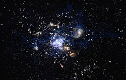

Las pruebas de una aparición temprana de las galaxias se encontró en 2006 cuando se descubrió que la galaxia IOK-1 tenía un corrimiento al rojo anormalmente alto (6,96) correspondiente a solo 750 millones de años después del Big Bang. Esto la convertía en la galaxia más lejana y antigua nunca vista.10 Mientras que algunos científicos sostienen que otros objetos como Abell 1835 IR1916 tienen corrimientos al rojo más altos y, por lo tanto, están en una etapa más temprana de la evolución del universo, la edad y composición de IOK-1 se ha establecido con mayor fiabilidad. En diciembre de 2012 varios astrónomos informaron de que UDFj-39546284 era el objeto astronómico conocido más distante, con un valor de corrimiento al rojo de 11,9. Se estima que el objeto empezó a existir unos 380 millones de años 11 después del Big Bang;12 es decir, la luz que nos llega ha recorrido unos 13 420 millones de años luz. La existencia de estas tempranas protogalaxias sugiere que deben haberse formado en la llamada Edad Oscura.8
El 5 de mayo de 2015 se anunció que la galaxia EGS-zs8-1 era la galaxia más distante y antigua conocida, formada unos 670 millones de años después del Big Bang. La luz de EGS-zs8-1 ha necesitado 13 000 millones de años para llegar a la Tierra y se encuentra ahora a 30 000 millones de años luz de distancia debido a la expansión del universo.
